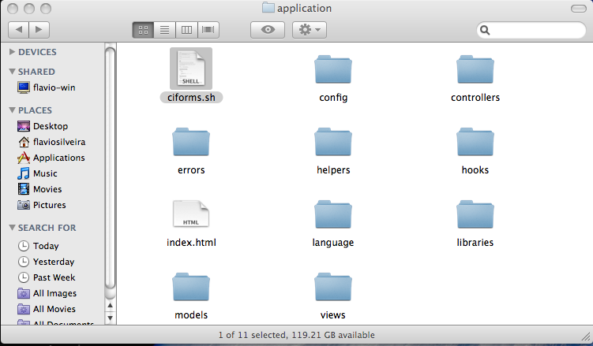
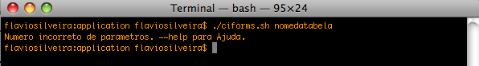
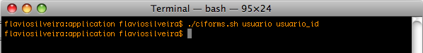
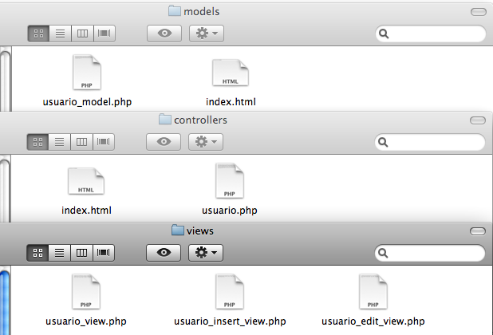
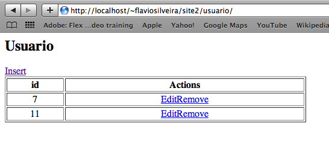
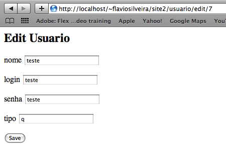
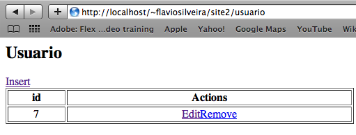

CodeIgniter ‘metido’ a Ruby on Rails. (ciforms.sh)
Salve Galera…
Vocês sabem, muitos projetos em sistemas são similares, sempre aquela mesma coisa…Listar, Inserir, Editar e Remover.
Isso me levou a querer criar algo para facilitar tudo isso.
Vendo meu Amigo Fábio Tomio mandando ver no Ruby On Rails, ele me mostrou que criava um cadastro (Listar, Inserir, Editar e Remover) muito facilmente, com apenas um comando no terminal, usando a funcão Scaffold se não me engano.
Inspirado nisso, resolvi fazer um Shell Script que geraria todas as views, controller e model prontas com essas opções.
Introdução
- Chamei de CiForms.
- Essa é uma versão de teste. É a versão Zero.
- Fiz esse script como estudo. Não tenho pretensões de lucros, suporte, nem nada com ele.
Porque não usar o Scaffolding do CodeIgniter
- O Scaffolding do CodeIgniter não é aproveitável para o desenvolvimento de um projeto, ele não segue o padrão MVC do Framework. Como consta no manual, ele é apenas uma maneira de popular rapidamente uma tabela.
Limitações dessa versão
- É um shell Script. Vai rodar apenas em base Unix. Fiz testes no Linux distribuição Ubuntu 8.10 e no Leopard MAC OSX 10.5.6. Não vai rodar no Windows.
- Por enquanto está rodando apenas em DataBase MySQL, Tive problemas com a função listFields com outros bancos.
- Você deve estar com o módulo Rewrite do apache instalado, e usando o .htaccess como indicado no manual do CodeIgniter para fazer suas URL amigáveis, senão a navegação vai ficar super esquisita.
- Você deverá chamar o script de dentro da sua pasta Application e as pastas Controllers, Models e Views não podem ter sido renomeadas.
Como Usar
- É bem simples. Basta chamar o script, passando o nome da tabela e em seguida o de sua PK.
- O script tem uma opção para ajuda (-h ou –help) e para verificar a versão (-V ou –version)
Exemplo prático
Baixe o Sheel Script clicando aqui.
É necessário colocar o sheel dentro da pasta applications.

Em seguida Vamos executá-lo no terminal.
Para chamar o script, apontamos o caminho atual (./) e depois seu nome (ciforms.sh).
Repare que se não passar os parâmetros corretos ele não irá executar e irá lhe oferecer o help.

Colocando corretamente os parâmetros (Nome da tabela e em seguida a Primary Key da tabela)

O Script é executado e você já pode conferir nas pastas que foram criados os arquivos .php.
Um controller, um model, e três views.

Basta agora chamar no browser o seu site, em seguida o nome da tabela.
Aqui está a listagem, onde você tem o Id do registro e os opções para Editar ou Remover.

Após Editar você volta para a listagem.

Após clicar em remover, você repara na listagem com um registro a menos.

Fique a vontade para abrir o código e conferir como são feitas as chamadas e tudo mais. O Shell vai gerar tudo em uma linha só. Se você usa o Eclipse ou o Aptana como editor basta dar um Ctrl+Shift+F para identar tudo automaticamente.
Os Arquivos php não contam com praticamente nenhum comentário, pois tive problemas do Shell em relação a eles.
Devo mexer em breve nele para funcionar com Postgres. Até lá, um abraço a todos.